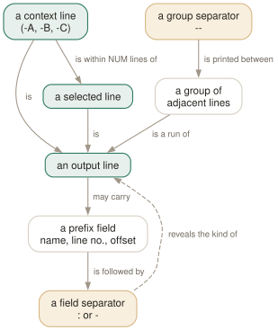

Day 06
Lines around the line
Context, prefixes, and the colon-versus-hyphen distinction nobody notices.
By the end of today you can
- read a grep -C listing and tell a hit from its context without counting lines
- explain when the
--group separator appears and when it silently does not - parse grep's own output safely, prefix fields and all
A match is rarely the thing you wanted to read
A stack trace, a config stanza, the body of a function, the request that preceded the error — none of these are one line. Context options let grep print the neighbourhood of a match, and they turn grep from a line filter into a passable file reader.
-A NUM prints lines after, -B NUM before, -C NUM both. There is also a bare -NUM, which is exactly -C NUM — grep -2 ERROR is the form worth putting in your fingers, and it is one of the very few options in any Unix tool that is just a number.

: after the prefix fields of a selected line, - after those of a context line. It is the only machine-readable part of context output, and it is why cut -d: falls apart the moment you add -C.The colon and the hyphen
$ grep -n -C1 ERROR app.log
2-INFO connected to db
3:ERROR timeout talking to db
4-INFO retrying
--
7-INFO steady state
8:ERROR timeout talking to db
9-INFO giving up
Look at what follows the line numbers. Lines 3 and 8 matched, and their prefix is closed with a :. Lines 2, 4, 7 and 9 are context, and theirs is closed with a -. The same rule applies to the filename prefix when there is one.
The -- that means “lines are missing here”
Between two groups of output that are not adjacent in the file, grep prints a line containing --. It marks a gap, not a match, and whether it appears depends entirely on the data.
$ grep -n -C3 ERROR app.log
1-INFO starting worker 1
2-INFO connected to db
3:ERROR timeout talking to db
4-INFO retrying
5-INFO connected to db
6-INFO steady state
7-INFO steady state
8:ERROR timeout talking to db
9-INFO giving up
Same file, same pattern, wider context — and no separator anywhere, because the two windows now touch and the output is one contiguous run. Widen or narrow the context and the delimiters in your output appear and disappear.
--no-group-separator- Drop it entirely. Use this before piping context output anywhere.
--group-separator=SEP- Replace it.
--group-separator=with an empty value gives you a blank line between groups, which reads well in a terminal.
Prefix fields
Everything before the separator is a prefix field, and they appear in a fixed order: filename, line number, byte offset.
-n- The 1-based line number. The single most useful option in this course when you are about to open an editor.
-H/-h- Force or suppress the filename. The default is “on with two or more file operands”, which means a glob can change your output format depending on how many files matched it.
-b- The 0-based byte offset of the line — or, with
-o, of the matched substring itself. Useful for seeking into a file you are not going to read linearly. -T- Put the content on a tab stop and pad the numeric fields to a fixed width, so a multi-file listing lines up.
--label- Rename
(standard input)to something meaningful. Needs-Hto actually show.
$ grep -bn ERROR app.log
3:46:ERROR timeout talking to db
8:149:ERROR timeout talking to db
$ grep -bo timeout app.log
52:timeout
155:timeout
Line 3 begins at byte 46; the word timeout within it begins at byte 52. That change of meaning under -o is deliberate and documented, and it is what makes -b usable for indexing.
Today's habit
Add -n to every grep you run against source code, permanently. The line number costs nothing, and it is the difference between finding a thing and being able to go to it.
# ~/grep-recipes.sh
#
# Day 6: read a log around its errors. -2 is -C2, and shorter.
grep -n -2 ERROR app.log
# Day 6: context destined for another program - kill the -- separator.
grep -n -C2 --no-group-separator PATTERN file
# Day 6: name a pipe so the prefix is not '(standard input)'.
gzip -cd old.log.gz | grep -Hn --label=old.log ERROR
New vocabulary
Options
| Option | Does |
|---|---|
-A NUM, --after-context=NUM | Print NUM lines after each match. |
-B NUM, --before-context=NUM | Print NUM lines before each match. |
-C NUM, --context=NUM | Print NUM lines on both sides. |
-NUM | Bare number: identical to -C NUM. grep -2 pat is the one worth typing. |
--group-separator=SEP | Print SEP instead of -- between non-adjacent groups. |
--no-group-separator | Print no separator at all. What you want before piping into another tool. |
-n, --line-number | Prefix each output line with its 1-based line number. |
-H, --with-filename | Force the filename prefix. Automatic with two or more files. |
-h, --no-filename | Suppress the filename prefix. Automatic with one file. |
-b, --byte-offset | Prefix the 0-based byte offset. With -o, the offset of the match itself. |
-T, --initial-tab | Line the content up on a tab stop, and pad the numeric fields to a fixed width. |
--label=LABEL | Call standard input LABEL instead of (standard input). |
Drillsdo these in a real terminal, today
Self-check
Answer out loud first, then unfold.
You run grep -n -C2 ERROR app.log | cut -d: -f1 expecting a list of line numbers and get a mixture of numbers and whole log lines. What did you forget?
That context lines use a different separator. grep joins the prefix fields of a selected line with : and those of a context line with -. So 3:ERROR ... splits on the colon and 4-INFO ... does not.
The -- group separator lines have no prefix at all and will also come through untouched. If you are parsing, the answer is not to ask for context: get the line numbers with a plain grep -n and expand the windows yourself. Context output is designed for a human reading it.
Two greps over the same file, one with -C1 and one with -C5. The first prints -- between the groups and the second prints none. Neither command mentions separators.
The separator marks a gap, not a match. With -C1 the two context windows do not reach each other, so there is a stretch of unprinted file between them and grep marks it. With -C5 the windows overlap, the output is one contiguous run of lines, and there is no gap to mark.
So the presence of -- tells you something real: lines are missing there. That also makes it unreliable as a record delimiter, because whether it appears depends on the data. --no-group-separator removes it, and --group-separator=SEP replaces it with something you chose.
Why does grep -n pattern *.c show filenames but the same command against a single file not, and what is the /dev/null trick the manual's EXAMPLE section uses?
grep prefixes filenames when it has two or more file operands and suppresses them when it has one — the --help text puts it as “with fewer than two FILEs, assume -h”. With a glob that is a problem, because the number of operands depends on how many files happen to exist, so the same command changes output format as the directory changes.
The old fix is to add /dev/null as an extra operand: it is always readable, always empty, never matches, and pushes the count to two. The modern fix is -H, which says what you mean. The manual keeps the trick because the example also demonstrates --, and both are worth recognising in other people's scripts.
Your script does zcat archive.log.gz | grep -n ERROR and the output is prefixed with (standard input) once you add a second input. How do you make the label useful, and why can grep not work it out itself?
Use --label: zcat archive.log.gz | grep -Hn --label=archive.log ERROR. grep cannot infer it because by the time the bytes arrive they have no filename — the pipe is anonymous, and the process that knew the name was zcat, which has already forgotten.
This is the same reason -H is needed alongside it when there is only one input: --label supplies the name, -H asks for it to be printed. Neither implies the other.
Cheat sheet
-A n after -B n before -C n both -n is short for -C n
--no-group-separator drop the '--' (do this before piping)
--group-separator=SEP replace it
# reading the output: PREFIXES then SEPARATOR then content
# 3:ERROR ... ':' = this line MATCHED
# 4-INFO ... '-' = this line is CONTEXT
# -- a gap: lines are missing here (absent if windows overlap)
-n line number -H/-h force/suppress filename -b byte offset
-T align content on a tab stop --label=NAME rename '(standard input)'
# filenames appear automatically with 2+ file operands - so a glob can
# change your output format. Say -H instead of adding /dev/null.
# -b with -o gives the offset of the MATCH, not of the line.
Everything through Day 06
Commands
| Command | Does |
|---|---|
grep root /etc/passwd | Search one named file. No filename prefix on the output. |
grep root /etc/passwd /etc/group | Search several. Output gains a file: prefix automatically. |
grep root | No file operand: read standard input. From a terminal, this waits for you. |
grep -r root | No file operand and -r: search the working directory instead. |
cmd | grep root - | A file operand of - is standard input, mixable with real files. |
echo $? | Read the status grep just returned. The habit this whole day is about. |
grep -e -v file.txt | Search for the literal string -v. -e protects a pattern that starts with a dash. |
grep -f patterns.txt data.txt | Take patterns from a file, one per line. The workhorse for long lists. |
cut -f1 ids.csv | grep -f - data.txt | Patterns from a pipe. -f - reads them from standard input. |
Options
| Option | Does |
|---|---|
-V, --version | Print the version and exit. Know which grep you are actually running. |
--help | Print the option summary and exit. Shorter and better organised than the man page. |
-- | End of options. Everything after it is a pattern or a filename, never a flag. |
-i, --ignore-case | Match regardless of case. What counts as “the same letter” depends on the locale. |
--no-ignore-case | Cancel an earlier -i. The last of the two on the line wins. |
-v, --invert-match | Select the lines that did not match. Applied once, after all patterns. |
-w, --word-regexp | Require the matched substring to be bounded by non-word characters or line ends. |
-x, --line-regexp | Require the match to be the entire line. Silently overrides -w. |
-e PAT, --regexp=PAT | Add a pattern. Repeatable, and combinable with -f. |
-f FILE, --file=FILE | Add every line of FILE as a pattern. An empty file matches nothing at all. |
-y | Undocumented synonym for -i. In neither the man page nor --help, but 3.12 accepts it. |
. | Match any single character. Whether it matches an encoding error is unspecified. |
[abc] | Match one character from the list. |
[^abc] | Match one character not in the list. The ^ must come first. |
[a-d] | A range. In the C locale, ASCII order; elsewhere the standard says it is unspecified. |
[[:digit:]] | A named class. The outer brackets are yours, the inner ones are part of the name. |
^ and $ | Anchor to the start and end of a line. They match a position, not a character. |
\< and \> | Anchor to the start and end of a word. A GNU extension. |
\b and \B | Anchor at, and not at, a word edge. \b is either edge; \< is only the left. |
\w and \W | Shorthand for [_[:alnum:]] and [^_[:alnum:]]. Note the underscore. |
* | Zero or more of the preceding item. The only repetition operator BRE spells the same way. |
? and + | At most one, and at least one. In BRE you must write \? and \+. |
{n,m} | Between n and m times. {,m} with no lower bound is a GNU extension. |
| | Alternation, and the loosest-binding operator there is. BRE spells it \|. |
(...) | Group, to override precedence. BRE spells it \(...\). |
\1 … \9 | Re-match the exact text the nth group captured. Slow, and worth avoiding. |
-E, --extended-regexp | Extended syntax: the operators above are bare. What you usually want. |
-G, --basic-regexp | Basic syntax: ? + { | ( ) need backslashes. The default. |
-F, --fixed-strings | No regex at all. Every pattern is a literal string, and it is the fastest matcher. |
-c, --count | Print the number of selected lines per file, not the number of matches. |
-l, --files-with-matches | Print each filename that had a match, and stop reading that file at the first one. |
-L, --files-without-match | Print each filename that had none. Read the gotcha about its exit status. |
-o, --only-matching | Print each matched substring on its own line. Non-overlapping, empty matches dropped. |
-q, --quiet, --silent | Print nothing; exit 0 on the first match. The right way to use grep as a test. |
-m NUM, --max-count=NUM | Stop after NUM selected lines. -m0 reads nothing at all. |
-s, --no-messages | Suppress error messages about unreadable files. Does not change the exit status. |
--color[=WHEN] | WHEN is never, always or auto. Nothing else, and abbreviations are refused. |
GREP_COLORS | Colon-separated SGR capabilities. Defaults to ms=01;31:mc=01;31:sl=:cx=:fn=35:ln=32:bn=32:se=36. |
-A NUM, --after-context=NUM | Print NUM lines after each match. |
-B NUM, --before-context=NUM | Print NUM lines before each match. |
-C NUM, --context=NUM | Print NUM lines on both sides. |
-NUM | Bare number: identical to -C NUM. grep -2 pat is the one worth typing. |
--group-separator=SEP | Print SEP instead of -- between non-adjacent groups. |
--no-group-separator | Print no separator at all. What you want before piping into another tool. |
-n, --line-number | Prefix each output line with its 1-based line number. |
-H, --with-filename | Force the filename prefix. Automatic with two or more files. |
-h, --no-filename | Suppress the filename prefix. Automatic with one file. |
-b, --byte-offset | Prefix the 0-based byte offset. With -o, the offset of the match itself. |
-T, --initial-tab | Line the content up on a tab stop, and pad the numeric fields to a fixed width. |
--label=LABEL | Call standard input LABEL instead of (standard input). |